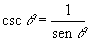
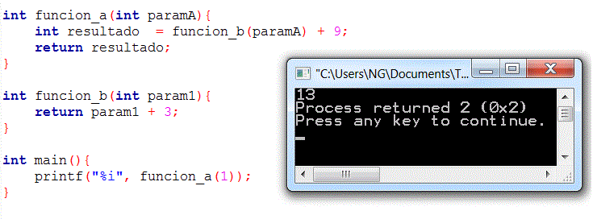

|
|
| Actividad:
Desarrollando
programas en C No. 4. Unidad: Estatutos de repetición. |
|
| Descripción | |
 |
|
| Modalidad | |
 |
|
| Objetivos de la actividad | |
 |
|
| Instrucciones | |
 |
Forma de trabajo:
Utiliza el siguiente
esquema como apoyo para desarrollar tus soluciones:
 Ejercicio 1 Implementa las siguientes funciones, recuerda que las funciones y procedimientos se definen antes de la codificación del int main(). La función pies_metros, que recibe una cantidad en pies y regresa su equivalencia en metros. El encabezado de la función, podría ser el siguiente: float pies_metros (float pies) { } por ejemplo si mandas a llamar pies_metros (10.0) te debe devolver el valor flotante 3.048 casos de prueba:
La función metros_pies, que recibe una cantidad en metros y regresa su equivalencia en pies. El encabezado de la función, podría ser el siguiente: float metros_pies (float metros) { } por ejemplo si mandas a llamar metros_pies (10.0) te debe devolver el valor flotante 32.8084 casos de prueba:
Nota: La relación de conversión entre estas dos unidades de longitud es: 1 ft = 0.3048 mts. La función vacíao procedimiento unidades_longitud, que despliegue el siguiente menú en pantalla: UNIDADES DE LONGITUD 1. Pies - Metros 2. Metros - Pies 3. Salir Opción? En el main() construye un programa que utilice la función vacía o procedimiento unidades_longitud para desplegar el menú correspondiente y de acuerdo a la opción seleccionada por el usuario utiliza la función apropiada de las implementadas anteriormente, para calcular la equivalencias de las unidades de longitud. Recuerda que la captura de datos y validación de valores debe ser realizada en el main( ), pues las funciones NO pueden realizar las tareas de validación o captura de datos. Incluye el algoritmo como comentario al inicio del programa. Ejercicio 2 Implementa las siguientes funciones: La función grados _ radianes, que recibe una cantidad en grados y regresa su equivalencia en radianes.  El encabezado de la función, podría ser el siguiente: float grados_radianes (float grados) { } por ejemplo si mandas a llamar grados_radianes (180.0) te debe devolver el valor flotante 3.141590 que es el equivalente a PI radianes casos de prueba:

El encabezado de la función, podría ser el siguiente: float cosecante (float grados) { } casos de prueba:
Para este problema utiliza la función sin(X) de la librería math.h, que calcula el seno del ángulo x especificado en radianes, por lo tanto, para poder usar esta función, es necesario primero transformar el ángulo en grados a radianes, para ello utiliza la función grados_radianes implementada anteriormente. Como puedes ver, es posible utilizar una función dentro de otra función tal como se muestra la imagen de abajo. La única condición que demanda el compilador, es que la función a utilizar dentro, haya sido definida anteriormente.  La función secante, que recibe un ángulo en grados y regresa la secante de dicho ángulo.  El encabezado de la función, podría ser el siguiente: float secante (float grados) { } por ejemplo si mandas a llamar secante (60) te debe devolver el valor flotante 2 o un número decimal muy cercano como 1.99999 casos de prueba:
El procedimiento identidades, que despliegue el siguiente menú en pantalla: IDENTIDADES TRIGONOMéTRICAS 1. Secante 2. Cosecante 3. Salir Opción? En el main() construye un programa que utilice el procedimiento identidades y de acuerdo a la opción seleccionada por el usuario utilice la función apropiada de las implementadas anteriormente, para calcular la identidad trigonométrica elegida. Recuerda que la captura de datos y validación de valores debe ser realizada en el main( ), pues las funciones NO pueden realizar las tareas de validación o captura de datos. Incluye el algoritmo como comentario al inicio del programa. Programa Abierto: Desarrolla
un programa donde uses al menos 3 funciones, las funciones deben de
mandarse a llamar más de una vez cada una en el main y regresar valores
diferentes para parámetros diferentes. Este programa es tuyo, úsalo para hacer cosas interesante y retadoras no cosas fáciles. |
| Recursos | |
 |
|
| Especificaciones de entrega | |
 |
|
 |
|
| DR© Tecnológico de Monterrey Campus Querétaro| Departamento de Desarrollo Académico| México, 2011 | |